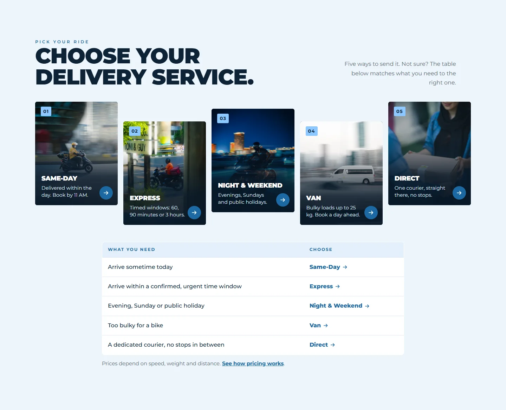

Live since October 2026
A website that brings in its own customers
A new website for a Singapore courier company, designed and built solo. Days after launch it was the first source Google's AI answer pointed to for "document courier singapore".
Read the case study